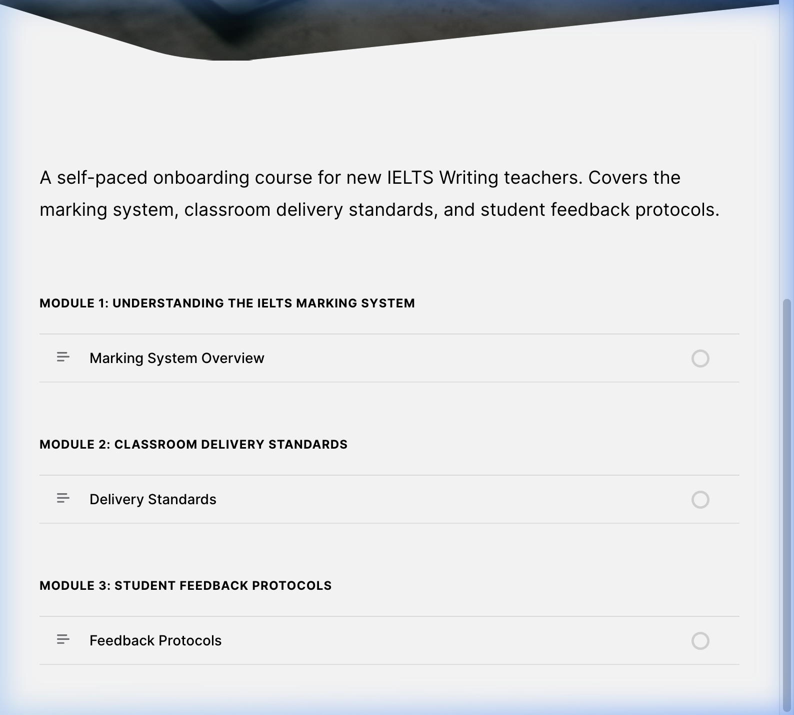
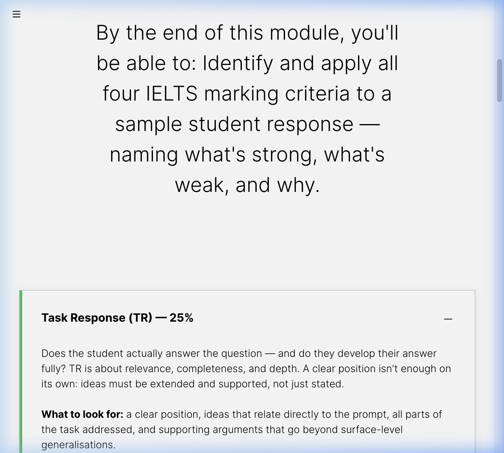
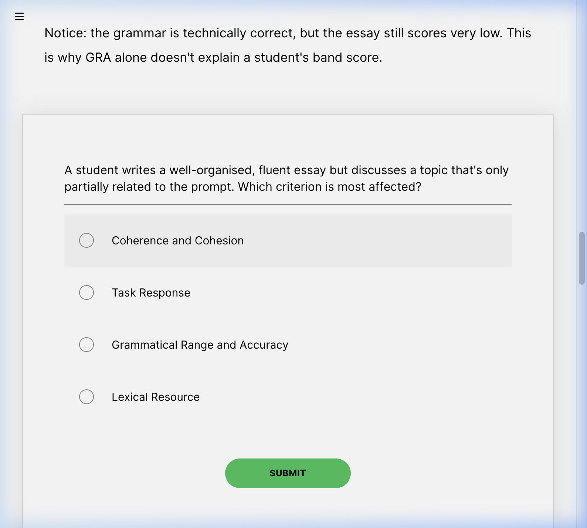

Articulate Rise 360Moodle 4.xSCORM 1.2Gagne's Nine Events
The Problem
When new IELTS teachers join a center, getting them aligned on marking criteria, lesson structure, and feedback protocols takes time — and usually requires a senior teacher to walk them through everything in person.
The goal of this project was to design a self-paced onboarding experience that new teachers could complete independently before their first class, without needing synchronous handholding.
Core Objective
Create a 3-module Rise 360 course covering:
→1. IELTS marking criteria and official Band Descriptors.
→2. The 120-minute lesson framework used at the center.
→3. Feedback protocols for Writing and Speaking tasks.
Deploy as SCORM 1.2 to Moodle with completion tracking, allowing Academic Managers to verify compliance before teacher assignment.
What I Built
A 3-module self-paced onboarding course in Articulate Rise 360 with a focus on usability and instructional rigor:

Curriculum Architecture: A 3-module framework designed for logical scaffolding, ensuring teachers master marking criteria before classroom delivery.
→Mobile-first design — all blocks tested for responsiveness across screen sizes to support "on-the-go" learning.
→Gagne's Nine Events used as the structural framework to ensure effective sequencing for adult learners.
→Interactive engagement — labeled graphics, sorting activities, and knowledge checks embedded throughout each lesson.
→Official Source Mapping — content mapped directly to IELTS Band Descriptors without paraphrasing bias.
Design Decisions
Why Rise 360?
Block-based structure is faster to build and easier to update for content that changes with marking criteria updates.
Embedded Checks
Embedding short checks after each section keeps learners actively processing rather than passively reading a long quiz at the end.
Technical Evidence

Active Learning: Deconstructing Band Descriptors through interactive labeled graphics.

Competency Validation: Integrated knowledge checks that simulate real-world marking dilemmas to verify instructional alignment.
What I Learned
→Rise 360's block-based structure encourages thinking in modular chunks — each block should serve one clear learning objective.
→Gagne's Nine Events provided a useful framework for sequencing content, especially for adult learners who need context and relevance.
→Deploying SCORM to Moodle requires testing completion triggers carefully — defining success criteria must happen before export.